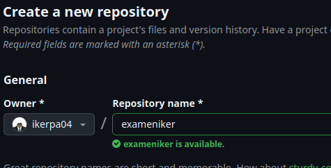
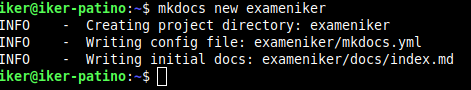
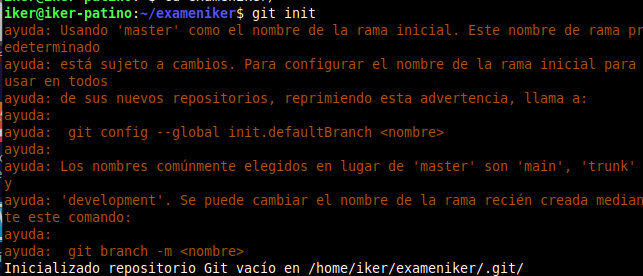
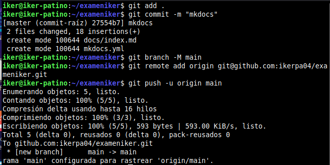
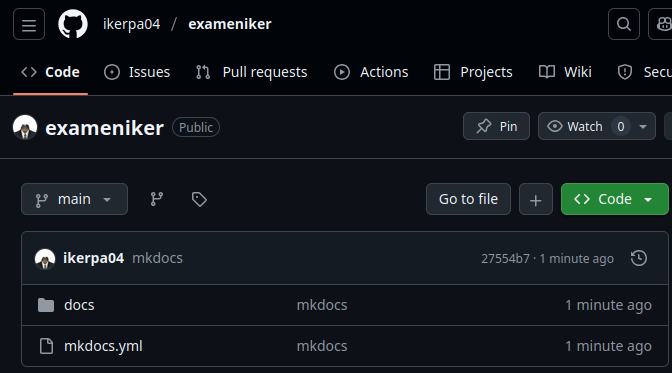
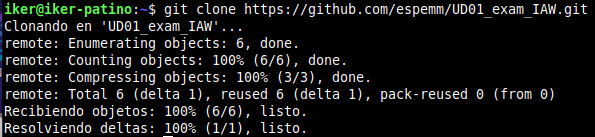
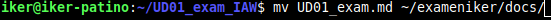
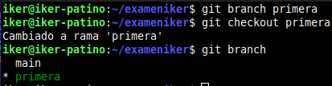
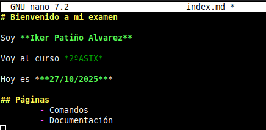
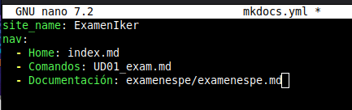

EXAMEN GIT GITHUB MKDOCS MARKDOWN
Crear repositorio
Creamos un repositorio local primero.

MKDOCS
Creamos un directorio para mkdocs/repositorio.

Ahora iniciamos el repositorio.

A continuación, subimos todo a github.

Verificamos.

Clonamos el repsotirio de la profesora
Clonamos el repositorio.

Copiamos el md de la profesora a nuestro repositorio.

Ramas
Creamos una nueva rama en nuestro repositorio y cambiamos a ella.

Páginas
Modificaremos la pagina principal con nuestros datos.

En el archivo YML pondremos la navegación a las diferentes páginas.

Subimos lo que hemos hecho a mkdocs